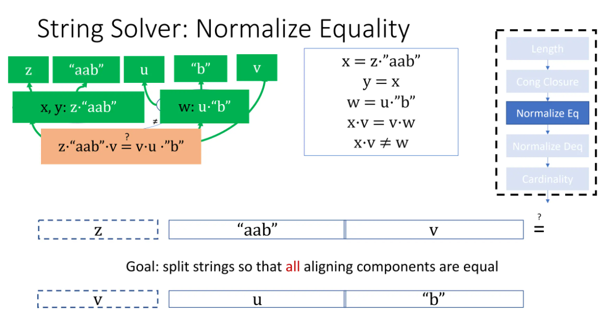
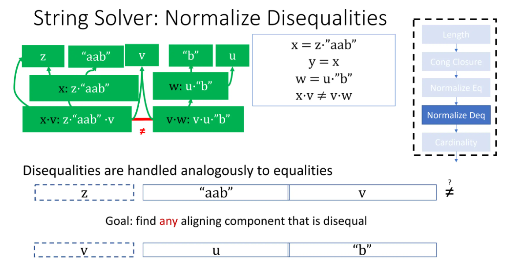
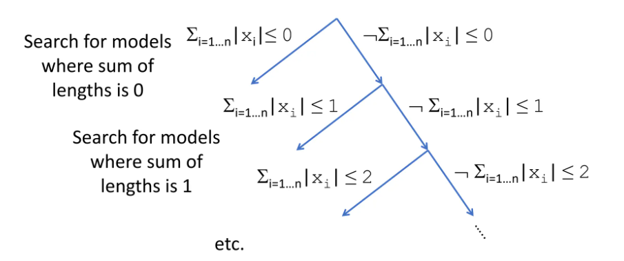
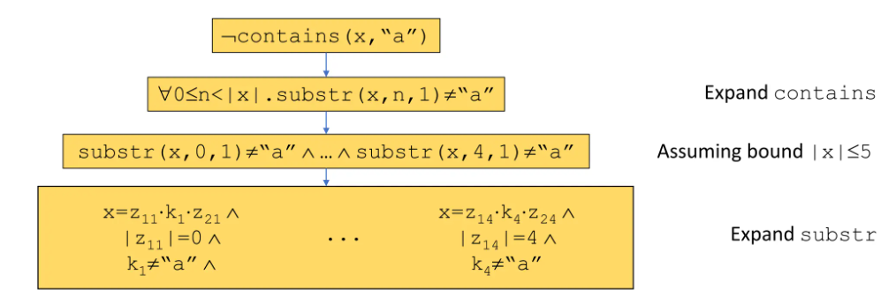
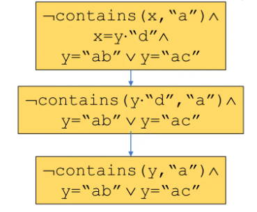

Notes: SMT String Solving in CVC4(5)
Standard Pipeline
String Length -> Congruence Closure -> Normalize String Equalities -> Normalize String Disequalities -> Check Cardin
对于String theory理论组：
其中 “” 代表字符串连接操作。
Length
对出现的每个字符串（常量或变量）提出长度引理，常量直接给出长度，变量的相等和连接转化为长度的算术关系：
\begin{matrix}
|\textrm{``b"}| = 1, &|\textrm{``aab"}| = 3, &|x\cdot v| = |x| + |v| \\
|z \cdot \textrm{``aab"} | = |z| + 3, &|u \cdot \textrm{``b"} | = |u| + 1, &|v \cdot w | = |v| + |w| \\
x = \textrm{``"} \vee |x| \geq 1, &y = \textrm{``"}\vee |y| \geq 1, &\cdots
\end{matrix}
将新约束加入子句中，使用SAT求解器和Nelson-Oppen框架求解，以下亦是如此。
Congruence Closure
将相等的terms整合为等价闭包：
其中由于不等关系，
Normalize Equality
范式：字符串的连接，其中每一个元均为所在等价类中的代表。
- base：
- 常量必须被选为该等价类的代表，即该等价类的范式即为此常量；
- 单个变量构成的等价类的范式即为这个变量。
- induction: 范式
中的每一项，均为一个等价类的范式。
可以根据归纳法自底向上计算范式：
是范式。- 由于
和均为范式，的范式为；同理的范式是。 - 接下来替换
中的为,为，此时无法判断是否等价类等价，需要分v和z长度关系讨论，讨论后重新构建等价类进行计算。

若在等价类中推出不等，即可直接输出unsat.
Normalize Disequalities
和等式类似，通过构建范式去确保不等关系间两个等价类的范式不相等：

Cardinality
对于有限字符集，需要确保理论可以被有限字符集构造出来；假设理论隐含了257个不同的长度为1的字符串，而字符集仅有256个字符，则理论是unsat的。
其他CVC5中的技术
Finite Model Finding for Strings
在搜索字符串空间时，通过限定字符串长度和之界来限界搜索。

Context-Dependent Simplification for Extended String Constraints
对于拓展字符串操作，例如子串，包含，取序号，替换操作的解决方式。
朴素方法 将拓展操作通过有界谓词转化为基础操作:

简化操作：通过已知等价关系缩小搜索范围，例如：

Context-aware：通过string solver察觉到contains(y, "a"), y = "ab" y = "ac"内部隐含的unsat。
Aggressive Simplifications for Strings
很多字符串隐含关系是十分非平凡的，例如
substr(x·"abcd", 1 + len(x), 2) = "bc"
将字符串的表达式转化为字符串长度的表达式等可以优先找出unsat的情况。
Notes: SMT String Solving in CVC4(5) © 2024 by Daniel Gu. All rights reserved.
×